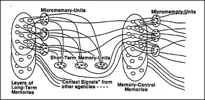

What controls the working of the mind from one moment to the next? How do we keep our place when doing complicated jobs, so that when interrupted from outside — or by another thought from inside — we can get back to where we were, instead of having to start all over again? How do we keep in mind which things we've tried and what we've learned along the way, so that we don't go round and round in loops?
No one yet knows how memories control themselves inside our brain; perhaps each major agency has somewhat different processes, each suited to the special kinds of jobs it does. The diagram below suggests some of the sorts of memory-machinery we'd expect to find inside a typical large agency.
We'll assume that every substantial agency has several micromemory-units, each of which is a sort of temporary K-line that can quickly store or restore the state of many of the agents in that agency. Each agency also has several short-term memory-units, which can, in turn, store or restore the states of the micromemories themselves. When any of these temporary memory-units are reused, the information that was stored in them is erased — unless it has somehow been transferred into more permanent or long-term memory-systems. There is good evidence that, in human brains, the processes that transfer information into long-term memory are very slow, requiring time intervals that range from minutes to hours. Accordingly, most temporary memories are permanently lost.
A growing child acquires many ways to control all these mechanisms. Accordingly, our diagram includes the flow of information among the other agencies. Since this memory-controlling agency must also learn and remember, our diagram includes a memory-system for it as well.